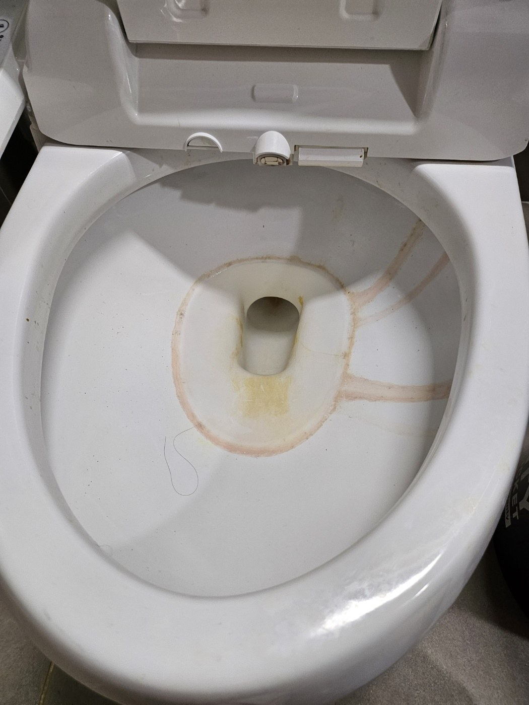
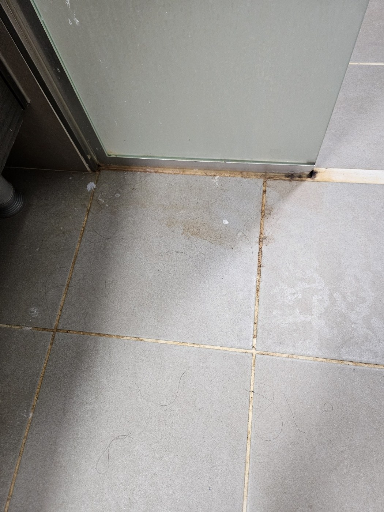
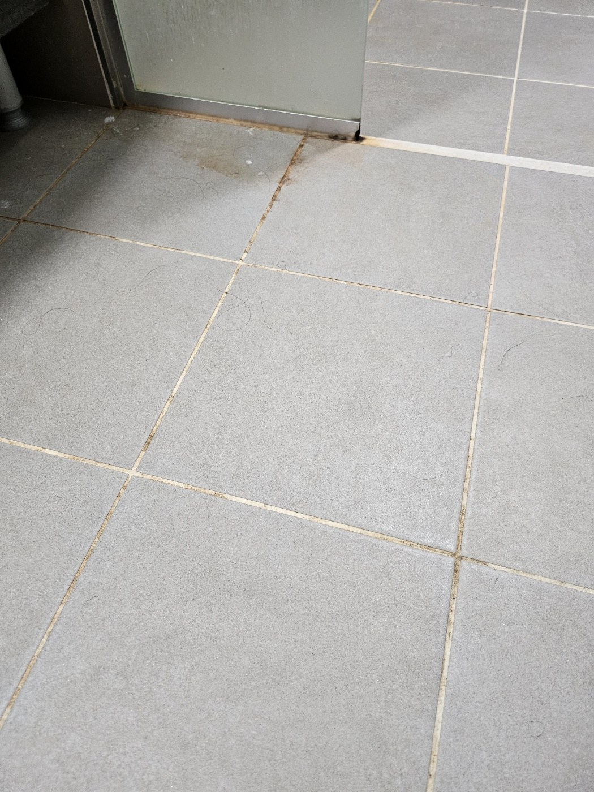
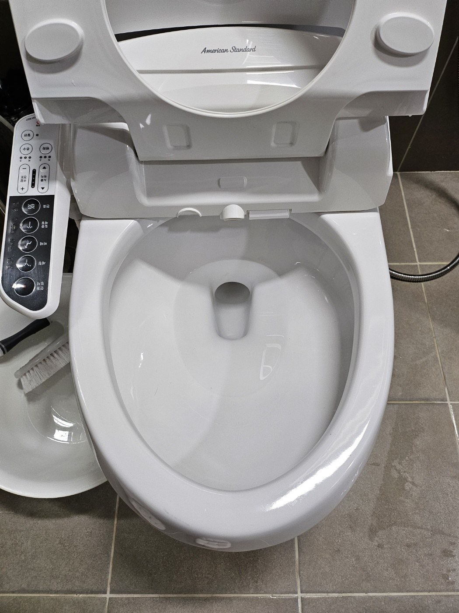
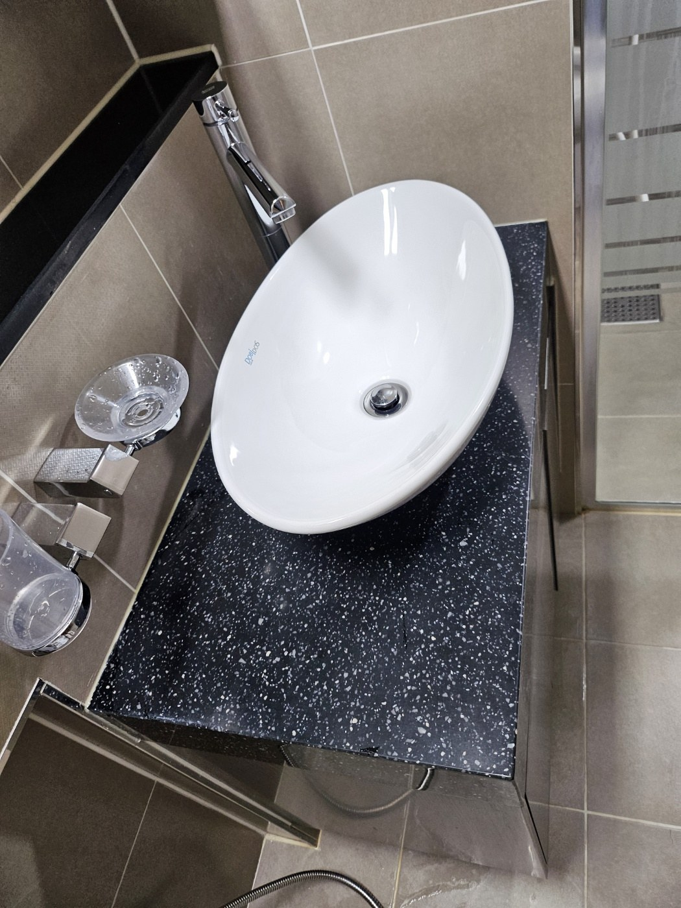
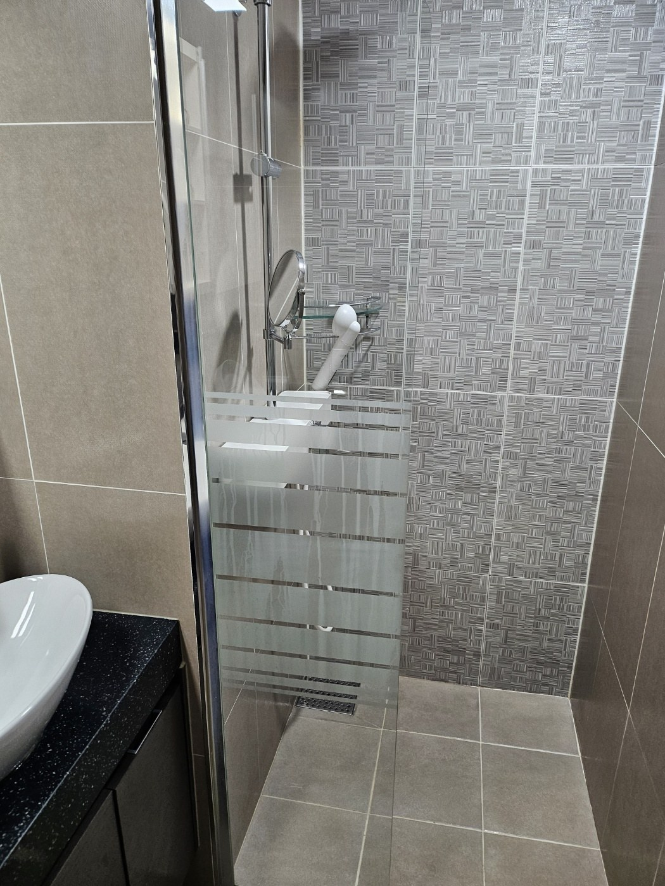
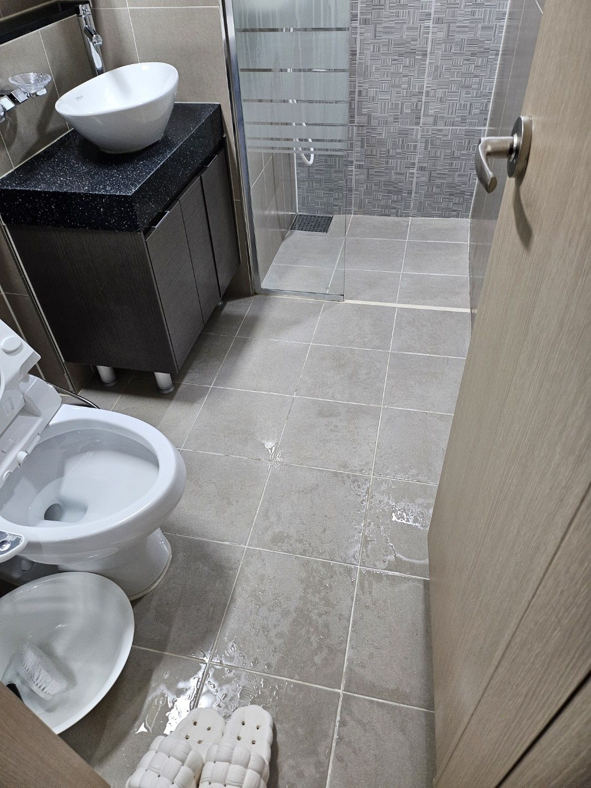

변기 안쪽의 누적 오염부터 확인했습니다
변기 안쪽에 붉은색과 노란색 계열의 착색이 남아 있어 도기 표면의 오염 상태를 먼저 확인했습니다. 이런 자국은 사용하면서 반복적으로 생길 수 있어 일반적인 물청소만으로는 잘 지워지지 않는 경우가 있습니다. 도기 손상을 줄이면서 오염 부위를 집중적으로 정리하는 방식으로 작업했습니다.

샤워부스 하단과 줄눈에 오염이 집중되어 있었습니다
물기가 자주 머무는 샤워부스 하단과 바닥 줄눈에는 색이 짙어진 오염이 보였습니다. 특히 유리문 하부 레일과 벽면 접점은 물이 고이기 쉬워 반복적인 관리가 필요합니다. 바닥 전체 상태를 확인한 뒤 줄눈과 경계부를 나누어 세정했습니다.

배수구와 코너의 오염을 함께 정리했습니다
배수구 주변과 벽면 코너는 청소할 때 놓치기 쉬운 곳입니다. 물때와 먼지가 겹치면 색이 탁해지고 냄새가 남을 수 있어 바닥 중앙과 별도로 확인했습니다. 배수 방향을 고려해 세정 후 오염수가 남지 않도록 정리했습니다.

도기 표면을 깨끗하게 마감했습니다
세정 후에는 변기 안쪽과 시트, 외부 도기까지 다시 확인했습니다. 강한 세제 냄새나 잔여물이 남지 않도록 충분히 헹구고 물기를 정리했습니다. 흰 도기의 밝기가 다시 살아나면서 화장실 전체 인상도 훨씬 깔끔해졌습니다.

세면대와 수전의 물때를 정리했습니다
세면대는 물이 튀는 면적이 넓어 수전 주변과 배수구에 물때가 생기기 쉽습니다. 도기 곡면과 수전, 거울 아래쪽을 순서대로 정리하고 마지막에는 물자국이 남지 않도록 마감했습니다. 손을 씻을 때 바로 보이는 공간이라 작은 얼룩까지 확인했습니다.

샤워공간의 바닥과 벽면을 함께 마무리했습니다
샤워부스는 바닥만 닦는 것이 아니라 유리문 하단과 벽면, 수전 주변을 함께 관리해야 깔끔한 상태가 오래갑니다. 세정 후 남은 물기를 정리하고 배수 상태를 확인했습니다. 발이 직접 닿는 공간인 만큼 미끄러움이 남지 않도록 마감했습니다.

욕실 전체를 다시 확인하며 마감했습니다
변기와 세면대, 샤워부스, 바닥을 각각 청소한 뒤에는 전체를 한 번 더 확인했습니다. 구역별로 깨끗해도 경계부에 얼룩이 남으면 완성도가 떨어지기 때문에 문턱과 가구 하단, 코너까지 체크했습니다. 사용 가능한 상태로 물기를 정리해 마무리했습니다.
가정집 화장실은 오염 원인에 따라 작업 범위가 달라집니다
물때, 비누 찌꺼기, 줄눈 오염, 변기 착색, 배수구 주변 오염은 각각 제거 방식이 다릅니다. 현장 상태를 확인한 뒤 필요한 부분을 중심으로 청소하는 것이 도기와 타일 손상을 줄이는 데 도움이 됩니다.
양산 물금 화장실청소 상담도 무료 방문견적 기준으로 안내합니다
화장실 크기뿐 아니라 샤워부스 유무, 욕조, 줄눈 상태, 수납장과 거울 면적, 오염 정도에 따라 작업시간이 달라질 수 있습니다. 사진 상담 또는 현장 확인 후 필요한 범위를 안내합니다.
현장에 맞춘 무료 방문견적
정기청소와 상가·사무실·화장실 청소는 공간 크기만으로 동일한 견적을 내기 어렵습니다. 퍼펙트케어는 현장의 이용량, 바닥 재질, 오염도, 관리 범위를 확인한 뒤 필요한 작업을 안내합니다.